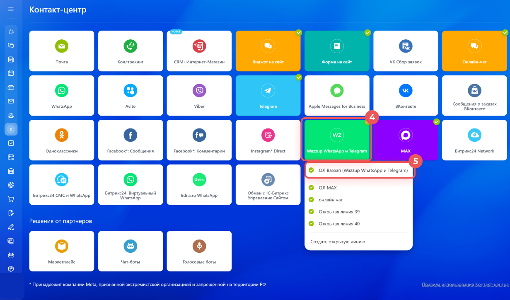
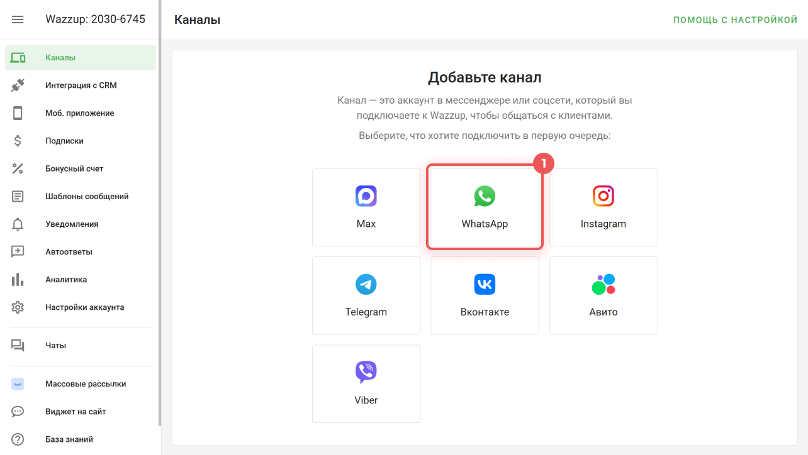
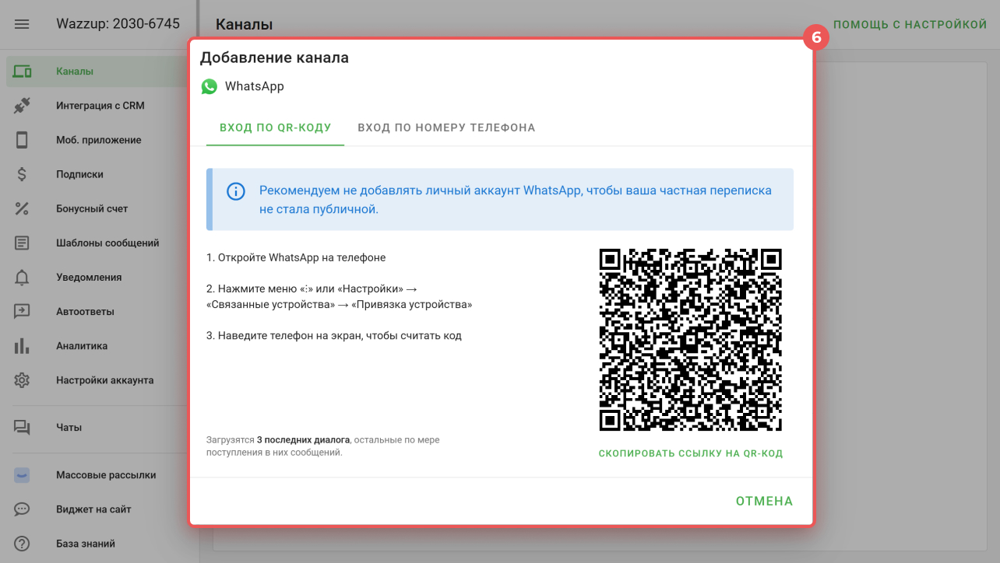
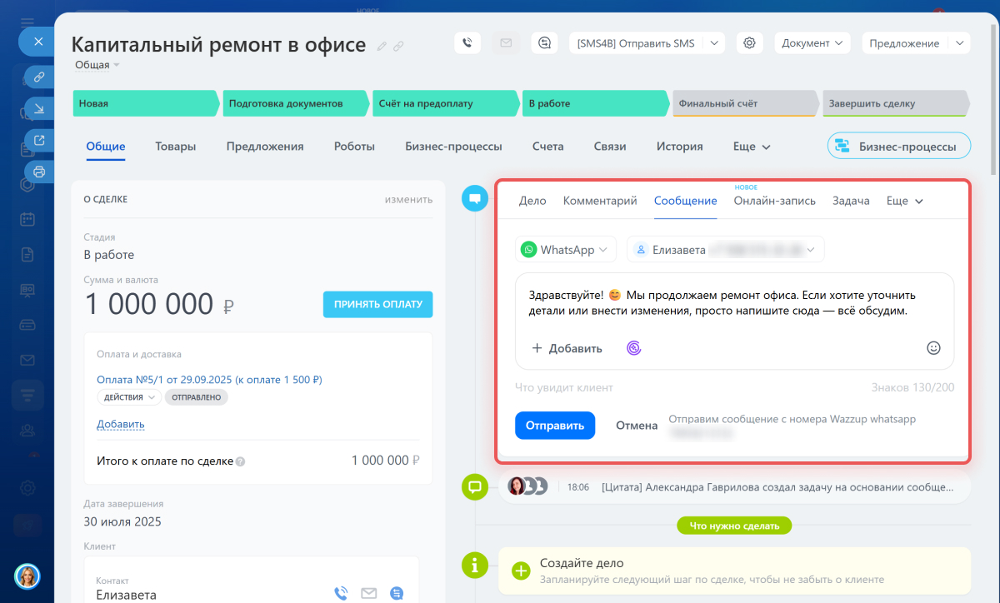

Интеграция мессенджеров и Битрикс24: WhatsApp, Telegram и сервис Wazzup
Всё больше клиентов пишут в WhatsApp или Telegram вместо звонка — и ждут ответа так же быстро, как в переписке с другом. У Битрикс24 есть штатные каналы для этих мессенджеров, но у WhatsApp есть строгое правило: компания не может написать клиенту первой без специального шаблона. Из-за этого ограничения бизнес часто подключает сторонний сервис — чаще всего Wazzup. Разбираем, как устроены штатные каналы, в чём проблема с первым сообщением и как её решает Wazzup.
Открытые линии: один механизм для всех каналов
Мессенджеры, как и соцсети, подключаются к Битрикс24 через общий механизм — Открытые линии: сообщения попадают в очередь, распределяются между менеджерами по заданным правилам, а история переписки сохраняется в карточке клиента в CRM. Подробно про устройство очереди, автоответы, рабочее время и чат-ботов мы разбирали в статье «Интеграция соцсетей и Битрикс24» — здесь не будем повторяться и сразу перейдём к тому, что у мессенджеров устроено иначе.
Какие мессенджеры подключаются без разработки

 Telegram подключается через бота — токен создаётся у @BotFather за пару минут, бесплатно
Telegram подключается через бота — токен создаётся у @BotFather за пару минут, бесплатно- Viber подключается как официальный чат-бот компании
- Оба канала можно поставить в виджет на сайте вместе с остальными
- Ограничений на первое сообщение клиенту, как у WhatsApp, здесь нет
- Штатно доступно несколько вариантов: Виртуальный WhatsApp, Edna.ru WhatsApp, Apple Messages for Business, MAX
- Подключение к Битрикс24 бесплатное, но сами сервисы WhatsApp и Edna — платные на своей стороне
- WhatsApp доступен не на всех тарифах Битрикс24
- У официального WhatsApp есть правило первого сообщения — смотрите ниже
Правило первого сообщения в WhatsApp
Официальные правила WhatsApp (и в целом сервисов Meta) устроены так, что компания не может первой написать клиенту в свободной форме. Первым всегда пишет клиент — а дальше у компании есть 24 часа, чтобы ответить чем угодно. Как только 24 часа прошли, чтобы написать снова, нужен заранее одобренный шаблон сообщения — обычное сообщение уже не отправить.
Для входящих обращений — когда клиент сам написал с вопросом — это не проблема. Но если нужно напомнить о брошенной корзине, сообщить о статусе заказа спустя сутки, поздравить с праздником или просто написать первым по базе контактов — штатный канал WhatsApp для этого не годится без регистрации и одобрения шаблонов сообщений.
«Именно это ограничение — причина номер один, по которой к нам приходят с запросом „подключите Wazzup“. Дело не в удобстве интерфейса, а в том, что менеджерам физически нужно писать клиентам первыми — а штатный канал WhatsApp вне диалога это не позволяет». Команда «АйТи Аналитикс»
Как работает Wazzup
Wazzup — сервис-посредник между мессенджерами и CRM. Он не заменяет Открытые линии Битрикс24, а подключается к ним отдельным каналом и передаёт туда сообщения из WhatsApp, Telegram, Instagram, ВКонтакте, Авито и Viber. Официально в Битрикс24 есть справка именно по этой связке — значит, интеграция признана и поддерживается на уровне документации вендора.

Главное отличие от штатного канала: WhatsApp в Wazzup можно подключить как обычный личный номер — точно так же, как вы привязываете WhatsApp Web на компьютере. Для этого не нужна заявка в WhatsApp Business API и одобрение шаблонов. А значит, не действует и правило 24 часов — отвечать и писать первым можно в любое время.

Дальше Wazzup связывается с Битрикс24 через API-ключ: в разделе Wazzup → Интеграция с CRM его копируют, а в Битрикс24 — в разделе Контакт-центр → Wazzup — вставляют в настройки открытой линии и выбирают, какой канал подключить, WhatsApp или Telegram. После этого сообщения клиента приходят прямо в открытую линию, а менеджер может написать первым из карточки сделки, лида или контакта.

- Пишете клиенту первым в любое время — без шаблонов и 24-часового окна
- Подключение обычного номера по QR-коду — без заявки в WhatsApp Business API
- Один сервис — сразу несколько каналов: WhatsApp, Telegram, Instagram, ВКонтакте, Авито, Viber
- Есть и вариант с официальным WhatsApp Business API (WABA) — для более крупных объёмов и нескольких номеров
- Это платный сервис — три дня бесплатного пробного периода, дальше отдельный тариф Wazzup поверх тарифа Битрикс24
- Личный номер, подключённый в обход официального API, — не Business-аккаунт: агрессивные массовые рассылки с него нарушают правила WhatsApp и рискуют закончиться блокировкой номера
- Для официальных шаблонных рассылок большому числу клиентов лучше подходит WhatsApp Business API напрямую
Другие сервисы для интеграции мессенджеров
Wazzup — самый известный, но не единственный сервис такого рода в каталоге Битрикс24 Маркетплейс. У остальных похожая идея — мессенджер плюс открытая линия, — но разные акценты.
- Делает акцент на групповых чатах WhatsApp — можно вести переписку в группе, а не только один на один
- Несколько номеров с разграничением прав между менеджерами
- Свой Telegram-бот, который можно разместить как контакт на сайте или в соцсетях
- Принимает обращения и от личных чатов с ботом, и из групп
- Интеграция с мессенджером MAX — обмен файлами, эмодзи, голосовыми сообщениями
- 3 дня бесплатно, дальше оплата прямо из виджета
- WhatsApp, Telegram, ВКонтакте, MAX, Авито и виджет на сайт в одном окне
- Встроенный ИИ-контроль качества переписки менеджеров
- Понятный прайс: WhatsApp и Telegram — 2000 ₽ за канал в месяц, Авито, ВК и сайт — 500 ₽ за канал
На что смотреть при выборе сервиса
- Поддерживает ли сервис именно те каналы, которые нужны вам, и групповые чаты, если они важны
- Как устроена оплата — за канал, за сообщение или фиксированный тариф, и что входит в пробный период
- Подключаете личный номер по QR-коду или официальный WhatsApp Business API — от этого зависят риски и ограничения
- Для обычного общения с клиентами «как в переписке» сервисы вроде Wazzup через QR-подключение решают задачу быстро и без лишней сложности
- Для официальных массовых рассылок по шаблонам — нужен WhatsApp Business API напрямую или через провайдера вроде Edna
- Всегда есть смысл протестировать сервис на пробном периоде, прежде чем платить за месяцы вперёд
Что входит в интеграцию мессенджеров
Разбор задачи
Смотрим, нужен ли просто приём обращений или ещё и возможность писать клиенту первым — от этого зависит выбор способа подключения.
Выбор способа
Штатный канал, Wazzup или другой сервис — подбираем под задачу и бюджет, а не по умолчанию.
Подключение канала
Настраиваем Telegram-бота, Viber-бота или WhatsApp через выбранный сервис, привязываем к открытой линии.
Очередь и автоответы
Настраиваем распределение обращений между менеджерами и автоответ на нерабочее время.
Обучение сотрудников
Показываем, как отвечать и писать первыми из карточки CRM, не выходя в отдельные приложения.
Подключим WhatsApp и Telegram к Битрикс24
Разберём вашу задачу, подберём штатный канал или сервис вроде Wazzup и настроим всё так, чтобы менеджеры отвечали клиентам из одной CRM.